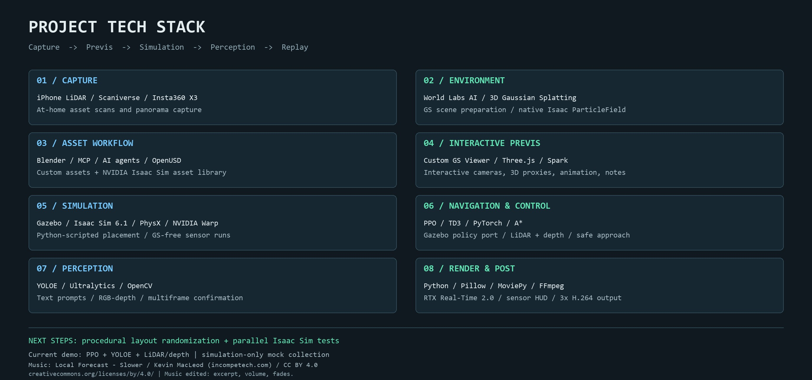

把昨天的 blocking 带进今天的测试
浏览器 previs 给出了相机想法、机器人与垃圾的大致布局。今天的目标是把这些意图带入 Isaac Sim，复用之前的避障 policy 和垃圾巡航模块，真正跑一轮测试，再决定怎样展示结果。这是在评估已有的、来自 Gazebo 的 PPO policy，不是重新训练模型。
我把游乐场 GS 作为原生 ParticleField 接入 Isaac Sim，物理仍然使用环境碰撞模型与稳定地面。Python 脚本按照测试布局摆放 USD 资产，根据资产 bounds 居中、对齐地面。这一轮故意设置绕行，但位置是固定的。规则驱动的随机布局和并行种子测试是下一步。
场景里有六个障碍物：我的椅子、哑铃和鞋子，以及 NVIDIA Isaac Sim 资产库的托盘货箱、KLT 小货箱和推车。自定义资产来自在家用手机 LiDAR 扫描、再交给 agent/MCP 准备的流程。机器人要找的是一个奶瓶、一个水瓶和六个纸团，包括为了可见性放大的版本。
GS 能显示，只是第一个问题
刚开始 viewport 几乎一片白。我在 Houdini 里遇到过类似现象：World Labs 数据应保留已有外观，不要盲目重建 spherical harmonics。这次保留源数据的零阶颜色，核对原生 schema 与渲染设置，在可工作的 Isaac 显示配置里启用 Fabric。但不能把所有白色 GS 问题都归结为同一个原因。
坐标 metadata 也重要。回放层遗漏了米制和 Z-up，导致世界网格看着方向不对。补上 metadata，不需要旋转机器人的轨迹。GS 地面本身还有厚度和重建误差；根节点 Z = 0，并不等于每个视觉地面点都物理平坦。
关键是分开视觉与碰撞。GS 提供外观，环境 collider 和稳定地面负责物理。为了画面移动 GS，不应该顺手改变物理场景。
为什么机器人突然觉得路被挡住了
显示出来的 GS 也会进入渲染深度。地面的噪声和 splat 厚度给深度地图加入了大量假障碍格。在起点视角的对照中，隐藏 GS 时只有两个障碍格，显示 GS 时约有 2,560 个，路线因此被判定为阻塞。物理碰撞模型并没有改变。
我们对比了 GS 显示、隐藏和移除，逐步降低 GS 找阻挡阈值。结论不是给不准确的重建地面找一个永远正确的 Z 偏移，而是把它从导航感知里分离：模拟时不显示 GS，回放时再用 GS 展示环境。
新进程里的五秒导航测试，移除 GS 和加载但隐藏 GS 分别约用 12.55 秒、12.44 秒，并没有复现此前的严重减速。另一个静态渲染对照则显示，GS 可见时确实增加渲染开销。这些是小范围诊断，不是普遍性能基准。
复用 Gazebo policy，再补深度检测低障碍物
原来的避障 policy 在 Gazebo 开发，再移植到 Isaac Sim。LiDAR 支持导航，新增的深度障碍物地图帮助发现低于 LiDAR 扫描平面的物体。执行 PPO 指令之前会检查膨胀地图和 A* 路线，fallback 动作也要检查，保持 12 cm 机体间隙加 2 cm 规划余量。
YOLOE 使用机器人的 RGB 相机和 text prompts：“milk bottle with handle”“plastic water bottle”“crumpled tissue paper”。深度用于定位检测结果。多帧确认后记住目标坐标，再选择可达的停车点。后面偶尔漏检，不会直接清空目标，也不会关闭避障。
机器人到停车点停下，发起 mock collection。只有成功 acknowledgement 才隐藏对应的模拟垃圾。场景身份只在这个 mock actuator 内部使用，不用来给导航提供垃圾坐标。本次机器人定位仍然使用模拟器 ground truth。
最后 8/8 模拟回收，用时 183.25 模拟秒，最大采样接触力 0 N。五个巡航点完成了四个，收集演示便停止了。它不是机械臂抓取、完整巡航覆盖或现实自主性的证明。过程中也有错误分类和被拒绝的候选检测。
先模拟，再决定怎样展示
最初浏览器里的相机动画只有五秒，机器人任务却长得多。我把两者分开：先记录真实物理轨迹与回收事件，再在 Isaac Sim 里用关键帧和 Curve Editor 调整导演相机。
构图避开 GS 最差的重建区域，灯光降低半档，让道具更接近背景亮度。Motion blur 开关本来已关，机器人仍有拖影，疑似涉及实时渲染的时间重建。调整 responsive denoising、GS depth/albedo 设置，并让每帧额外稳定一段时间后，采集效果改善了。
1920 × 1080 场景主画面采集了 1,833 帧，约用 18 分 2 秒，平均 1.69 fps，每帧含 24 次稳定更新。机器人测试墙钟用时约 6 分 53 秒。这些数字包含采样与推理工作流，不是硬件实时性能基准。
画图、写备注，把视频 vibe 出来
最后没有打开专门的合成软件。我在截图上画框、写备注：机器人视角放左边，导演画面放大，加入检测框、深度图与导航地图，让面板半透明，再用英文解释机器人当前状态。
Agent 把这些意图变成 Python 合成程序，使用 Pillow、NumPy、OpenCV、imageio-ffmpeg 和 FFmpeg。框和置信度来自真正的在线 YOLOE 输出；机器人视角与深度来自记录的传感器快照，观测之间保持上一帧；地图是保存的融合障碍地图，不是装饰性的 LiDAR 动画。左右都按同一个模拟时间，以 3 倍速回放。
小面板展示障碍物与垃圾资产，收集计数根据真正的 acknowledgement 时间更新。说明卡片介绍资产流程、policy 来源，视频尾页列出项目技术栈。从资产准备到最终合成，大部分流程由 AI agent 构建和自动化，但构图和表达方式仍然由我决定。
下一步想做什么
更多真实环境、程序化随机布局，以及并行 Isaac Sim 场景。然后加入机械臂做实际 manipulation，尝试 VLA 的更通用语言任务。这一轮把创意布局、可以测量的模拟和容易看懂的展示连在了一起。

记录、代码和音乐
音乐：Kevin MacLeod（incompetech.com）的《Local Forecast – Slower》，按 CC BY 4.0 授权使用。已截取片段、调整音量并加入淡入淡出。